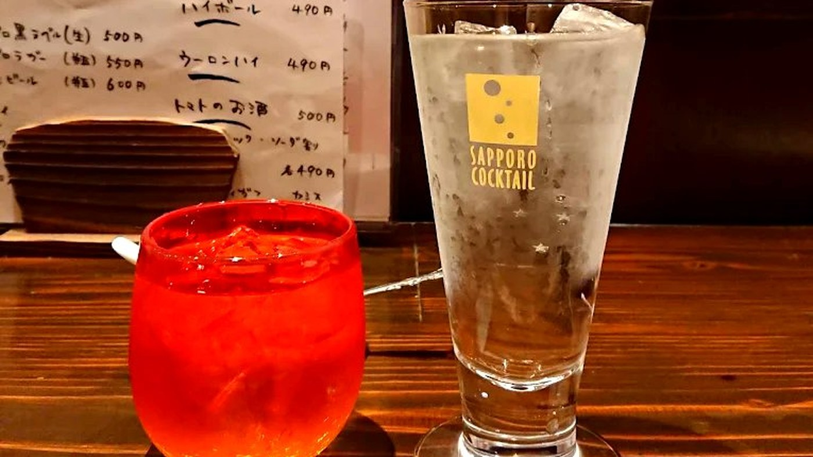

The Izakaya Sake Experience
You have just settled onto a counter stool at a small izakaya in Osaka. The staff calls out a warm welcome, a cold towel appears in front of you, and then comes the question every first-time visitor dreads: the drink menu. Rows of unfamiliar kanji, categories you have never seen, and temperatures you did not know existed. Ordering sake does not have to be intimidating. With a handful of key words and a willingness to explore, you can navigate any izakaya drink list with confidence.
Sake, known in Japan as nihonshu (日本酒), is a rice-based fermented beverage with a heritage spanning over a thousand years. At an izakaya, it is not just a drink — it is a companion to the food. Every dish on the table informs what you pour into your cup, and every sip reshapes how the next bite tastes. Understanding the basics will transform your evening from guesswork into genuine enjoyment.
Understanding Sake Types
Japanese sake is categorised by how much the rice grain has been polished before brewing. The more the outer layers are milled away, the more refined and aromatic the final product tends to be. Here are the three names you will encounter most often:
Junmai (純米) — Pure Rice
Junmai is brewed with nothing but rice, water, yeast, and koji mould. No brewing alcohol is added. The result is a full-bodied, savoury sake with a rich umami character. It pairs beautifully with bold, grilled flavours — think charcoal-kissed yakitori thighs or a smoky plate of chicken skin. If you enjoy flavour over fragrance, start here.
Ginjo (吟醸) — Aromatic & Elegant
For ginjo, at least 40 percent of the rice grain is polished away. This extra step creates lighter, more aromatic sake with notes of melon, green apple, or white flowers. Ginjo is an excellent middle ground — flavourful enough to stand alongside food, yet delicate enough to sip on its own between bites.
Daiginjo (大吟醸) — The Pinnacle
Daiginjo takes polishing even further, removing at least 50 percent of the grain. The brewing is slow and meticulous, often done at lower temperatures. The result is exceptionally refined: silky texture, complex fruit aromas, and a long, clean finish. Daiginjo is typically enjoyed chilled to preserve its nuance. It is the perfect choice to celebrate a special evening or to impress a dining companion.
Quick tip: If you see junmai ginjo or junmai daiginjo on the menu, it simply means the ginjo or daiginjo was brewed without added alcohol — the best of both worlds.
Choosing Your Temperature
One of the most delightful aspects of sake is that it can be served across a wide range of temperatures, each unlocking different flavour profiles from the same bottle. Here are the four terms you should know:
- Reishu (冷酒) — Chilled: Served around 5–10°C. Ideal for ginjo and daiginjo styles. Cold temperatures highlight floral and fruity aromas while keeping the palate crisp.
- Hiya (冷や) — Room temperature: Despite containing the kanji for “cold,” hiya actually means room temperature, roughly 15–20°C. This is the traditional default and lets the rice character shine through naturally.
- Nurukan (ぬる燗) — Lukewarm: Gently warmed to about 40°C. The warmth rounds out acidity and amplifies umami. This is a wonderful choice with hearty dishes on a cool Osaka evening.
- Atsukan (熱燗) — Hot: Heated to 50°C or above. Bold and warming, atsukan is best paired with robust junmai sake. It cuts through rich, fatty flavours and is a classic winter companion.
Not sure which temperature to try? Simply ask the staff. Most izakaya regulars let the season and their mood decide — cold in summer, warm in winter, and room temperature any time at all.
The Magic Phrase: Ask for a Recommendation
Here is the single most useful sentence you can learn before visiting an izakaya:
“Osusume wa nan desu ka?”
(おすすめは何ですか？)
“What do you recommend?”
Japanese bartenders and izakaya staff take enormous pride in guiding guests toward the right drink. Asking for a recommendation is not a sign of ignorance — it is a sign of respect. The staff will consider what you are eating, the season, and sometimes even your mood before pouring the perfect cup. At a small counter-style izakaya, this simple question often opens the door to the most memorable part of the night.
A few more handy phrases:
- “Karai no ga suki desu” (辛いのが好きです) — I like dry sake
- “Amakuchi ga ii desu” (甘口がいいです) — I prefer sweet sake
- “Mou ippai kudasai” (もう一杯ください) — One more glass, please
Sake vs Shochu: What is the Difference?
Walk into any izakaya and you will see both sake and shochu (焼酎) on the menu. They are often confused by visitors, but they are fundamentally different beverages.
Sake is a fermented drink, similar in production concept to beer or wine. It typically ranges from 13 to 17 percent alcohol. Shochu, on the other hand, is a distilled spirit — closer to vodka or soju in process — and sits around 25 percent alcohol. Shochu can be made from barley, sweet potato, rice, or even brown sugar, giving each variety a distinctive personality.
At an izakaya, shochu is commonly enjoyed in three ways: straight (sutoretto), on the rocks (rokku), or diluted with hot water (oyuwari). The hot water method is especially popular in winter and creates a gentle, warming drink that goes effortlessly with grilled food.
If you are curious about the full range of options, take a look at Danke’s sake and shochu selection to see what is available on any given night.
Pairing Sake with Yakitori
Sake and yakitori are one of Japan’s most natural pairings. The simplicity of grilled chicken seasoned with salt or brushed with tare sauce creates a canvas that sake enhances beautifully. Here are some pairing ideas to try:
- Momo (chicken thigh) with tare + junmai: The rich, caramelised glaze of tare sauce meets the full-bodied umami of a good junmai. Each sip cleanses the palate and prepares you for the next bite.
- Sasami (chicken breast) with salt + ginjo: Delicate, lean sasami with a pinch of wasabi calls for an equally refined partner. A chilled ginjo mirrors the subtlety without overpowering it.
- Reba (chicken liver) with tare + atsukan: Liver is bold and mineral-rich. Hot sake cuts through the intensity and harmonises the flavours in a way that cold drinks simply cannot.
- Kawa (chicken skin) with salt + junmai at room temperature: Crispy, fatty skin loves a sturdy sake served at hiya. The natural rice flavour complements the rendered fat perfectly.
- Shiitake mushroom with salt + daiginjo: The earthy depth of grilled shiitake finds an elegant counterpart in a chilled daiginjo. This is an understated pairing that rewards attention.
Explore the full lineup of skewers on Danke’s yakitori menu and start planning your next pairing adventure.
Putting It All Together
Ordering sake at an izakaya comes down to three decisions: type, temperature, and quantity. Start with one glass (ichi-go, roughly 180 ml) of whatever the staff recommends. Taste it alongside your first few skewers. If you enjoy it, order the same again or ask for something different. There is no wrong way to explore — the whole point of an izakaya is to relax, eat well, and let the evening unfold at its own pace.
At a neighbourhood spot like Danke in Tenjinbashi, the counter seats put you within arm’s reach of the chef. Watch how the yakitori is grilled over lava stone, ask about the day’s sake lineup, and let the conversation carry you through the night. That is what ordering sake like a local truly means — not memorising labels, but trusting the people behind the counter and enjoying every sip along the way.
居酒屋的清酒体验
你刚在大阪一家小居酒屋的吧台落座。店员热情地打招呼，一条冰毛巾递到面前，然后就是每位初次来访者都会紧张的环节：酒水菜单。满眼陌生的汉字、从未见过的分类，还有你不知道的温度选项。其实，点清酒并不需要紧张。掌握几个关键词，再加上一点探索精神，你就能自信地应对任何居酒屋的酒单。
清酒在日语中称为「日本酒」（nihonshu），是一种以大米为原料发酵而成的饮品，拥有超过千年的历史。在居酒屋里，清酒不仅仅是饮料——它是料理的搭档。桌上的每道菜都影响着你杯中的选择，而每一口酒又重新定义下一口食物的味道。了解基础知识，就能让你的夜晚从盲目猜测变成真正的享受。
了解清酒的类型
日本清酒根据酿造前大米的精米程度来分类。外层磨去得越多，成品往往越精致、越芳香。以下是你最常见到的三种：
纯米（Junmai）——纯米酿造
纯米酒仅用大米、水、酵母和米曲酿造，不添加酿造酒精。成品口感饱满、鲜美，富有浓郁的鲜味。它与浓郁的烤制风味完美搭配——想象炭烤鸡腿肉或烟熏鸡皮的味道。如果你喜欢风味胜过芳香，就从纯米开始。
吟酿（Ginjo）——芳香优雅
吟酿酒的大米至少精磨掉40%。这一额外步骤产生更轻盈、更芳香的清酒，带有蜜瓜、青苹果或白花的香气。吟酿是极佳的中间选择——既有足够的风味搭配食物，又足够细腻可以单独品尝。
大吟酿（Daiginjo）——巅峰之作
大吟酿的精米步骤更进一步，至少磨去50%的米粒。酿造过程缓慢而精细，通常在较低温度下进行。成品极为精致：丝滑的口感、复杂的水果香气和悠长干净的余韵。大吟酿通常冷饮以保留其层次感。这是庆祝特别夜晚的完美选择。
小贴士：如果菜单上看到「纯米吟酿」或「纯米大吟酿」，意味着这款吟酿或大吟酿是不添加酒精酿造的——两全其美。
选择温度
清酒最令人愉悦的一点是它可以在各种温度下饮用，每种温度都能释放同一瓶酒的不同风味。以下是你需要知道的四个术语：
- 冷酒（Reishu）——冰镇：约5-10°C。适合吟酿和大吟酿。低温突出花香和果香，保持口感清爽。
- 冷や（Hiya）——常温：虽然含有「冷」字，但实际指常温，约15-20°C。这是传统的默认温度，让大米本身的特质自然展现。
- ぬる燗（Nurukan）——微温：轻微加热至约40°C。温度圆润了酸度并增强鲜味。在凉爽的大阪夜晚搭配丰盛菜肴，是极佳的选择。
- 熱燗（Atsukan）——热饮：加热至50°C以上。浓郁温暖，热燗最适合搭配醇厚的纯米酒。它能切割浓郁油腻的风味，是经典的冬季伴侣。
不确定该试哪种温度？直接问店员吧。大多数居酒屋常客会根据季节和心情来选择——夏天喝冷的，冬天喝热的，常温则适合任何时候。
万能问句：请推荐
去居酒屋前，学会这一句话就够了：
「おすすめは何ですか？」
(Osusume wa nan desu ka?)
「有什么推荐的吗？」
日本的调酒师和居酒屋店员以引导客人选到合适的酒为荣。询问推荐不是无知的表现——而是尊重的体现。店员会考虑你正在吃什么、当前的季节，甚至你的心情，然后为你倒上完美的一杯。在吧台式的小居酒屋里，这个简单的问题往往会开启整晚最难忘的体验。
更多实用日语：
- 「辛いのが好きです」（Karai no ga suki desu）——我喜欢辛口（干型）清酒
- 「甘口がいいです」（Amakuchi ga ii desu）——我喜欢甜口清酒
- 「もう一杯ください」（Mou ippai kudasai）——请再来一杯
清酒与烧酒：有什么区别？
走进任何居酒屋，你都会在菜单上同时看到清酒和烧酒（shochu）。游客常常混淆，但它们是完全不同的饮品。
清酒是发酵饮品，生产过程类似啤酒或葡萄酒，酒精度通常在13-17%之间。烧酒则是蒸馏酒——工艺上更接近伏特加或韩国烧酒——酒精度约为25%。烧酒可以用大麦、红薯、大米甚至黑糖制成，每种原料都赋予其独特的个性。
在居酒屋，烧酒通常有三种喝法：纯饮（sutoretto）、加冰（rokku）或兑热水（oyuwari）。热水兑法在冬天特别流行，口感温和，与烤物完美搭配。
如果你对全部选择感到好奇，可以看看Danke的清酒和烧酒菜单，了解当晚有哪些酒款供应。
清酒与烤鸡串的搭配
清酒与烤鸡串是日本最天然的搭配之一。用盐烤或刷酱汁的简单鸡肉串，为清酒创造了完美的画布。以下是一些搭配建议：
- 酱汁鸡腿肉（Momo） + 纯米：浓郁焦糖化的酱汁遇上醇厚鲜美的纯米酒。每一口酒都清洁味蕾，为下一口做好准备。
- 盐烤鸡胸肉（Sasami） + 吟酿：清淡细嫩的鸡胸配上一点芥末，需要同样精致的搭档。冰镇吟酿恰到好处。
- 酱汁鸡肝（Reba） + 热燗：鸡肝风味浓郁。热清酒能化解其浓厚感，达到冷饮无法实现的和谐。
- 盐烤鸡皮（Kawa） + 常温纯米：酥脆多油的鸡皮搭配常温的醇厚纯米酒。天然的大米风味完美衬托油脂。
- 盐烤香菇（Shiitake） + 大吟酿：烤香菇的泥土深度在冰镇大吟酿中找到优雅的对手。这是一种值得细细品味的低调搭配。
在Danke的烤鸡串菜单上探索全部串烧品种，开始计划你的下一次搭配之旅。
综合实践
在居酒屋点清酒归结为三个决定：类型、温度和数量。先点一杯（一合，约180毫升）店员推荐的酒，搭配前几串烤鸡串品尝。如果喜欢，再点同款或请店员推荐不同的。没有错误的探索方式——居酒屋的意义就是放松、好好吃喝、让夜晚按自己的节奏展开。
在天神桥的Danke这样的社区小店，吧台座位让你伸手就能和厨师交流。看着烤鸡串在熔岩石上烤制，询问当天的清酒阵容，让对话带你度过这个夜晚。这才是像当地人一样点清酒的真正含义——不是背标签，而是信任吧台后面的人，享受每一口。
이자카야의 사케 체험
오사카의 작은 이자카야 카운터에 앉았습니다. 직원이 따뜻하게 환영하고, 차가운 물수건이 놓이고, 그리고 처음 방문하는 사람이라면 누구나 긴장하는 순간이 옵니다: 주류 메뉴. 낯선 한자, 본 적 없는 카테고리, 몰랐던 온도 옵션들. 하지만 사케 주문은 두려워할 필요가 없습니다. 몇 가지 핵심 단어와 탐험 정신만 있으면 어떤 이자카야 메뉴든 자신 있게 주문할 수 있습니다.
사케는 일본어로 '니혼슈'(日本酒)라고 하며, 쌀을 원료로 발효시킨 음료로 천 년이 넘는 역사를 가지고 있습니다. 이자카야에서 사케는 단순한 음료가 아닌 음식의 동반자입니다. 테이블 위의 모든 요리가 잔에 담긴 선택에 영향을 미치고, 한 모금이 다음 한 입의 맛을 새롭게 정의합니다. 기본을 이해하면 추측에서 진정한 즐거움으로 저녁이 바뀝니다.
사케의 종류 이해하기
일본 사케는 양조 전 쌀알의 정미 정도에 따라 분류됩니다. 바깥층을 많이 깎을수록 더 정제되고 향이 좋은 제품이 됩니다. 가장 자주 볼 수 있는 세 가지를 소개합니다:
준마이(純米) — 순수 쌀
준마이는 쌀, 물, 효모, 누룩만으로 양조합니다. 양조 알코올을 첨가하지 않습니다. 풍미가 풍부하고 감칠맛이 강한 사케입니다. 숯불에 구운 야키토리 닭다리나 닭껍질 같은 진한 구이 요리와 완벽하게 어울립니다. 향보다 풍미를 좋아한다면 여기서 시작하세요.
긴조(吟醸) — 향기롭고 우아한
긴조는 쌀알의 최소 40%를 깎아냅니다. 이 추가 과정으로 더 가볍고 향기로운 사케가 탄생하며, 멜론, 청사과, 흰 꽃의 향이 납니다. 긴조는 훌륭한 중간 선택입니다 — 음식과 함께하기에 충분한 풍미를 가지면서도 단독으로 즐기기에 충분히 섬세합니다.
다이긴조(大吟醸) — 최고의 경지
다이긴조는 정미를 더 진행하여 최소 50%를 깎아냅니다. 양조는 느리고 정밀하며, 보통 낮은 온도에서 이루어집니다. 결과물은 매우 정제되어 있습니다: 실크 같은 질감, 복합적인 과일 향, 길고 깔끔한 여운. 다이긴조는 보통 차게 마셔 뉘앙스를 보존합니다. 특별한 저녁을 축하하기에 완벽한 선택입니다.
팁: 메뉴에서 '준마이 긴조'나 '준마이 다이긴조'를 보면, 알코올을 첨가하지 않고 양조한 긴조 또는 다이긴조라는 뜻입니다 — 두 가지 장점을 모두 갖춘 것입니다.
온도 선택하기
사케의 가장 즐거운 점 중 하나는 다양한 온도로 즐길 수 있다는 것입니다. 각 온도는 같은 병에서 다른 풍미를 이끌어냅니다. 알아야 할 네 가지 용어입니다:
- 레이슈(冷酒) — 차게: 약 5-10°C로 제공. 긴조와 다이긴조에 이상적. 낮은 온도가 꽃향과 과일향을 부각시키고 입안을 상쾌하게 합니다.
- 히야(冷や) — 상온: '차갑다'는 한자가 있지만 실제로는 상온인 약 15-20°C를 의미합니다. 전통적인 기본 온도로 쌀의 특성을 자연스럽게 느낄 수 있습니다.
- 누루칸(ぬる燗) — 미지근하게: 약 40°C로 살짝 데운 것. 산도를 부드럽게 하고 감칠맛을 증폭시킵니다. 시원한 오사카의 밤에 든든한 요리와 함께하기에 좋은 선택입니다.
- 아쓰칸(熱燗) — 뜨겁게: 50°C 이상으로 가열. 진하고 따뜻하며, 준마이 사케와 가장 잘 어울립니다. 기름진 풍미를 잘라주며 겨울의 클래식 동반자입니다.
어떤 온도를 시도할지 모르겠다면 직원에게 물어보세요. 대부분의 이자카야 단골은 계절과 기분에 따라 결정합니다 — 여름엔 차게, 겨울엔 따뜻하게, 상온은 언제든지.
마법의 한마디: 추천을 부탁하세요
이자카야를 방문하기 전에 배워야 할 가장 유용한 문장입니다:
「おすすめは何ですか？」
(오스스메 와 난 데스카?)
「추천 메뉴가 뭐예요?」
일본의 바텐더와 이자카야 직원은 손님을 올바른 음료로 안내하는 것에 큰 자부심을 가지고 있습니다. 추천을 요청하는 것은 무지의 표시가 아니라 존경의 표시입니다. 직원은 당신이 먹고 있는 것, 계절, 때로는 기분까지 고려하여 완벽한 한 잔을 따라줍니다. 카운터 스타일의 작은 이자카야에서 이 간단한 질문이 밤의 가장 기억에 남는 순간을 열어주곤 합니다.
몇 가지 더 유용한 일본어:
- 「辛いのが好きです」 (카라이 노가 스키 데스) — 드라이한 사케가 좋아요
- 「甘口がいいです」 (아마쿠치가 이이 데스) — 달콤한 사케가 좋아요
- 「もう一杯ください」 (모우 잇파이 쿠다사이) — 한 잔 더 주세요
사케 vs 소주: 무엇이 다를까?
어떤 이자카야에 가든 메뉴에서 사케와 소주(焼酎)를 모두 볼 수 있습니다. 방문객들이 자주 혼동하지만, 근본적으로 다른 음료입니다.
사케는 발효 음료로, 맥주나 와인과 비슷한 생산 과정을 거칩니다. 알코올 도수는 보통 13-17%입니다. 소주는 증류주로 — 보드카나 한국 소주에 더 가까운 공정이며 — 약 25%의 알코올 도수를 가집니다. 소주는 보리, 고구마, 쌀, 심지어 흑설탕으로도 만들 수 있어 각 종류마다 독특한 개성이 있습니다.
이자카야에서 소주는 보통 세 가지 방법으로 즐깁니다: 스트레이트(sutoretto), 온더록(rokku), 또는 뜨거운 물에 희석(oyuwari). 뜨거운 물에 희석하는 방법은 겨울에 특히 인기 있으며, 부드럽고 따뜻한 음료가 되어 구이 요리와 잘 어울립니다.
다양한 선택이 궁금하다면 Danke의 사케 & 소주 메뉴를 확인해 보세요.
사케와 야키토리 페어링
사케와 야키토리는 일본에서 가장 자연스러운 조합 중 하나입니다. 소금이나 타레 소스로 간단하게 양념한 닭꼬치는 사케가 아름답게 살려주는 캔버스가 됩니다. 시도해볼 페어링 아이디어를 소개합니다:
- 타레 닭다리(모모) + 준마이: 풍부한 캐러멜라이즈드 타레 소스가 준마이의 풍부한 감칠맛과 만납니다. 한 모금마다 입맛을 정리해주고 다음 한 입을 준비시킵니다.
- 소금 닭가슴살(사사미) + 긴조: 섬세하고 담백한 사사미에 와사비 한 점은 똑같이 정제된 파트너가 필요합니다. 차가운 긴조가 딱 맞습니다.
- 타레 닭간(레바) + 아쓰칸: 간은 진하고 미네랄이 풍부합니다. 뜨거운 사케가 강렬함을 잘라주며 차가운 음료로는 불가능한 조화를 이룹니다.
- 소금 닭껍질(카와) + 상온 준마이: 바삭하고 기름진 껍질은 상온의 든든한 준마이와 잘 어울립니다. 자연스러운 쌀 풍미가 지방을 완벽하게 보완합니다.
- 소금 표고버섯 + 다이긴조: 구운 표고버섯의 깊은 흙 향이 차가운 다이긴조에서 우아한 상대를 찾습니다. 주의를 기울이면 보상해주는 절제된 페어링입니다.
Danke의 야키토리 메뉴에서 전체 꼬치 라인업을 살펴보고 다음 페어링 모험을 계획해 보세요.
모든 것을 종합하면
이자카야에서 사케를 주문하는 것은 세 가지 결정으로 귀결됩니다: 종류, 온도, 그리고 양. 직원이 추천하는 것으로 한 잔(이치고, 약 180ml)부터 시작하세요. 처음 몇 꼬치와 함께 맛보세요. 마음에 들면 같은 것을 다시 주문하거나 다른 것을 부탁하세요. 잘못된 탐험 방법은 없습니다 — 이자카야의 핵심은 편안하게, 잘 먹고, 밤이 자연스럽게 흘러가도록 하는 것입니다.
텐진바시의 Danke 같은 동네 가게에서는 카운터 좌석이 셰프와 가까이 해줍니다. 야키토리가 용암석 위에서 구워지는 모습을 지켜보고, 오늘의 사케 라인업을 물어보고, 대화가 밤을 이끌어가게 하세요. 이것이 현지인처럼 사케를 주문한다는 것의 진정한 의미입니다 — 라벨을 외우는 것이 아니라 카운터 뒤의 사람들을 신뢰하고 매 한 모금을 즐기는 것.